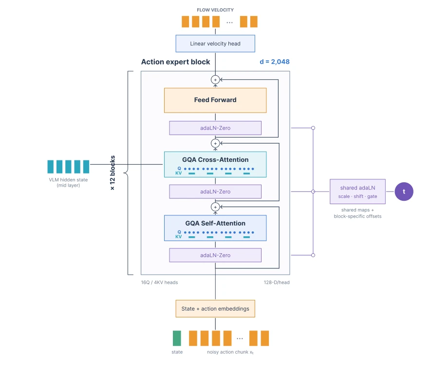
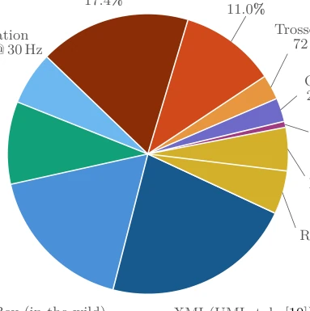
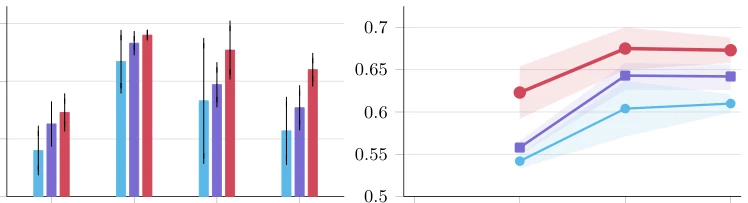
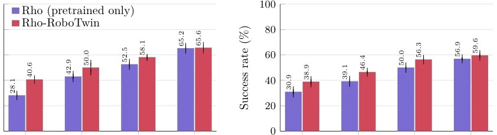
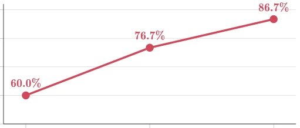
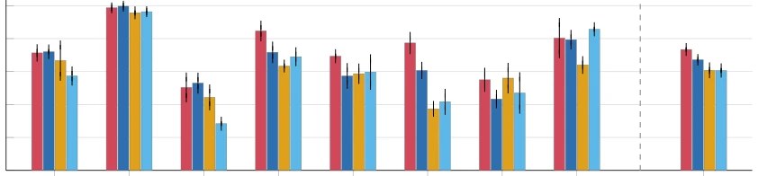
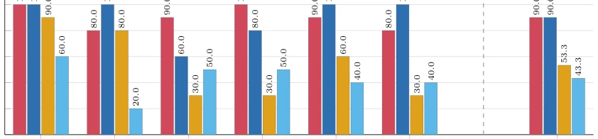
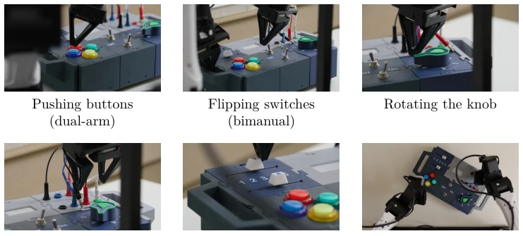
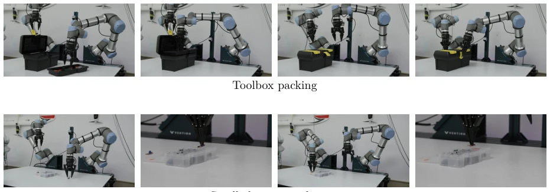
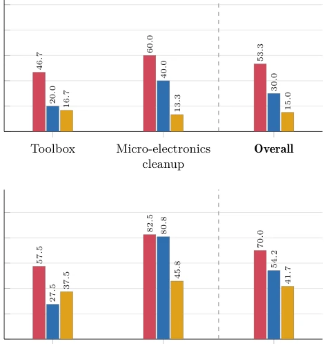

Microsoft is not bluffing this time; Rho decouples the "robot body" from the "task". Previously, VLAs were like master keys that could not open any lock; Rho first pairs the key with a lock (Midtraining), then unlocks it. However, do not celebrate too early, as online adaptation still relies on human correction (FlowDAgger), remaining distant from full autonomy. Architecturally, Flow-matching is employed; while parameter compression is elegant, it remains specialized for dual arms—single arm or humanoid? Unlikely. Open sourcing is beneficial, but industrial deployment hinges on specific hardware compatibility, as YAM, UR, and FR3 represent only the tip of the iceberg, relying additionally on specific simulator data augmentation. This "divide and conquer" approach is indeed clever, but whether too much generalization is sacrificed remains to be observed.
Existing VLAs (such as π0 [4]) exhibit low zero-shot success rates on unseen tasks and consume significant data when adapting to new robot platforms. Directly fine-tuning pretrained models requires re-acquainting with the control space, resulting in low efficiency. Although π0.5 [2] etc. are powerful, they lack intermediate training tailored to specific robot bodies. Rho aims to bridge the gap from "general foundation" to "specific execution" by decoupling body adaptation from task adaptation, thereby reducing downstream data requirements. Existing works mostly focus on single tasks or generalization, neglecting the adaptation costs incurred by robot kinematic differences, which leads to deployment difficulties. This causes models to be "unaccustomed to the environment" in real-world scenarios, necessitating extensive data for retraining.

Figure 2 The Rho flow-matching action expert. State and noisy-action tokens pass through 12 wide transformer blocks with grouped-query self-attention, cross-attention to the VLM context, and feed-forward updates. The flow timestep conditions the sublayers through shared adaLN-Zero maps with block-specific offsets.
Overall divided into four steps: 1. Pretraining: Based on Phi-Phy backbone + Flow experts, mixing robot trajectories and VQA data (Rho-Tomyum). 2. Body Midtraining: Targeting YAM/UR/FR3 specific hardware, horizontally learning kinematics and control. 3. Offline Task Fine-tuning: Vertically adapting to specific tasks. 4. Online Adaptation: Freeze backbone, train internal latent policy (Latent Policy) to learn from human feedback. Architecturally, the Action Expert uses a 12-layer Transformer, shared adaLN reduces parameters, supporting 32-dimensional continuous actions. Data standardization adopts relative delta end-effector representation to ensure multi-source data alignment. This design enables the model to understand both vision-language and the "temperament" of the robotic arm.

Figure 3 Rho-Tomyum mixture. Its 90% is composed of demonstration trajectories from physical and simulated robots as well as UMI-style demonstrations collected with standard YAM grippers, and the remaining 10% are vision-language data. All the robot/UMI-style data is bimanual, with the exception of a small subset of Open X-Embodiment Magic Soup [4] we call OXE Amuse Bouche. The robot data includes trajectories from policies controlling a UR AI Trainer simulated in NVIDIA Isaac Sim, trained using RL and the OmniReset framework [63].

Figure 5 Pretraining on 15% of the dataset mixture improves downstream adaptation. Left: LIBERO suite success after 20k task-adaptation steps. Right: RoboEval success throughout adaptation. The robot+VL condition combines robot trajectories with physical-grounding examples, the robot-data-only condition removes the physical-grounding batches, and the no-pretraining condition begins task adaptation from the grounded backbone with a randomly initialized action expert. Values are means and standard deviations over three evaluations, except the robot+VL RoboEval result at 40k adaptation steps, which pools six passes from two independent evaluations.

Figure 6 Embodiment midtraining on RoboTwin transfers to held-out tasks across downstream-data budgets. Each checkpoint is adapted for 40k steps and evaluated on the matched five-task protocol with 50 episodes per task. Bars are means over completed seeds (four for Easy, three for Hard) and error bars are sample standard deviations. The benefit of midtraining is largest in the low-data regime and shrinks as the adaptation set grows.
Tested on RoboEval, LIBERO, and real robots (YAM Box, UR AI Trainer, FR3 Duo). Baselines include π0.5 [2], GR00T. The metric is success rate. Ablation studies show: Body Midtraining halves the task fine-tuning data (Fig 6); adding physical grounding to pretraining improves downstream performance (Fig 5). Online adaptation requires only 15 correction clips to improve edge task performance. Rho surpasses open-source baselines on most tasks (Fig 8). Simulation and real-world results are consistent, proving the effectiveness of Midtraining. Especially on fine manipulation tasks, Rho performs more robustly, indicating that body adaptation is indeed critical.

Figure 7 FR3 Duo horizontal midtraining improves subsequent vertical adaptation to bimanual plug insertion. Every condition uses the same 50k-step task-adaptation budget; success reported over 30 trials.

Figure 8 Success rates of finetuned Rho, π0.5, GR00T-N1.7, and MolmoAct2 on RoboEval tasks. Rho outperforms all other models on Pick Book, Stack Book Shelf, and Rotate Valve. On each of the remaining 5 tasks, Rho matches the performance of the best baseline on that task. Importantly, each task’s best- performing baseline is generally different, so the next-strongest model, π0.5, matches Rho’s performance on only 4 out of 8 tasks.

Figure 10 YAM Box BusyBox results. After task-specific finetuning, Rho-YAM-Box achieves the same 90% mean success rate as π0.5 and a higher mean success rate than GR00T-N1.7 and MolmoAct2 across 60 matched evaluation rollouts.
其他图片Other Figures

Figure 9 The 6 BusyBox task categories used in the YAM Box experiments. Bimanual tasks require two-arm coordination; dual-arm tasks require choosing the correct arm for task completion.

Figure 11 The UR AI Trainer tasks and their stages. Each row shows task progression from left to right.

Figure 12 UR AI Trainer results. Rho-UR-AI-Trainer achieves higher success than both baselines on both tasks. On Small-electronics cleanup, π0.5 achieves similar mean task progress (80.8% versus 82.5%) despite lower success (40.0% versus 60.0%). π0.5’s failures tend to occur during final placement, whereas Rho’s failures more often occur during picking.